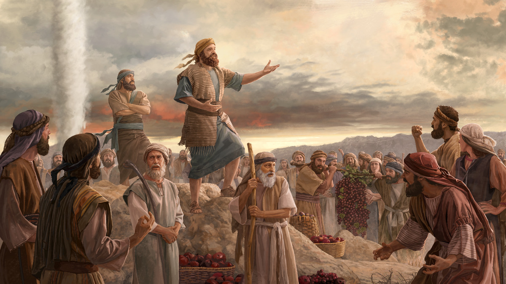
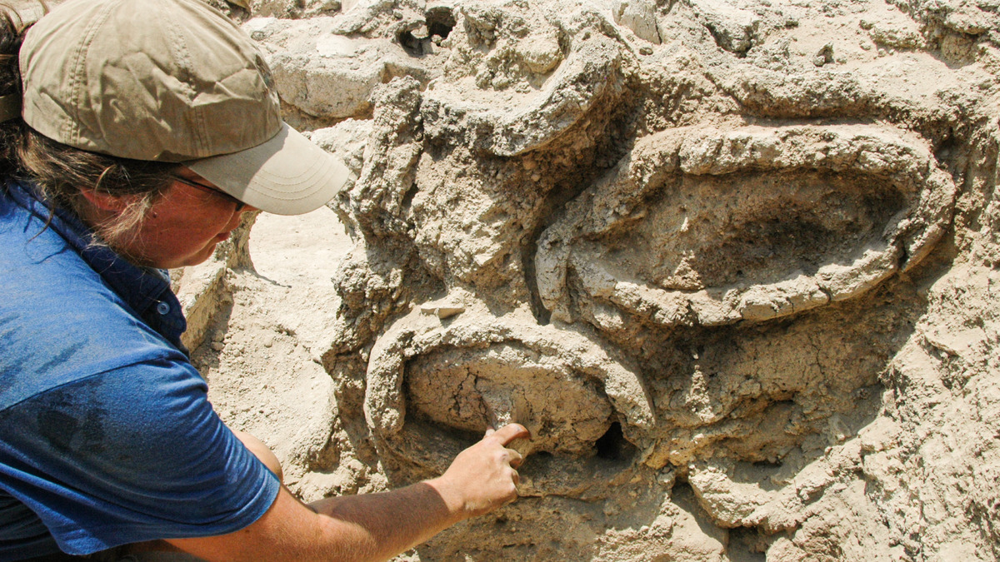
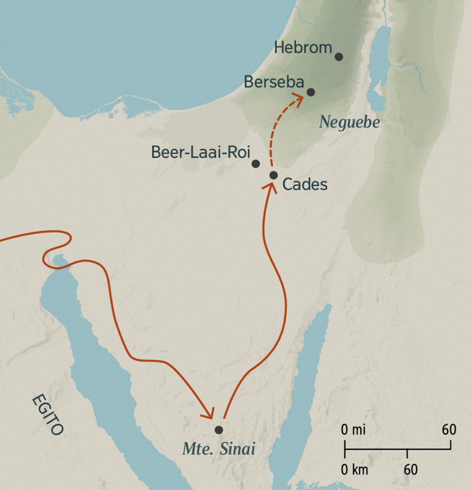
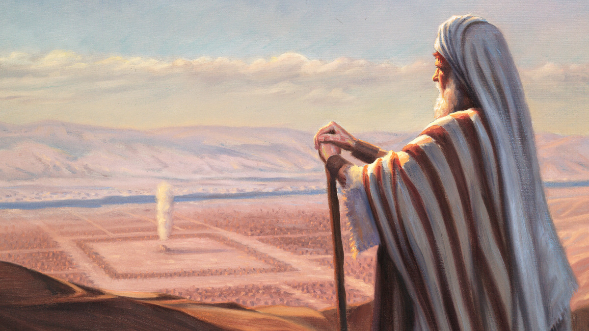
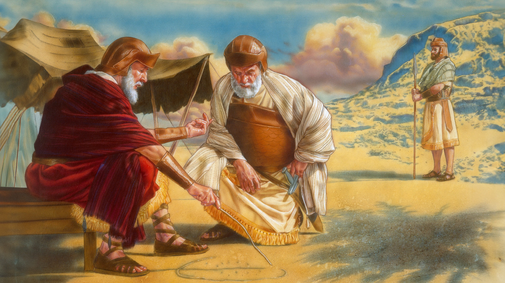

12 Calebe · semana de 12 a 18 de outubro de 2026
Ele continuou leal ao seu Deus
Leia o relato na Bíblia: Números 13:1 a 14:12, 20-38; Josué 14:6-15
Tempo do estudo: 30 minutos (parte 8 da reunião)
Cada parágrafo traz o conteúdo resumido, com as frases citadas do capítulo, os textos bíblicos escritos e um comentário pronto. O texto oficial completo está no jw.org e no JW Library: cada parágrafo tem um link direto.
Mais ou menos quando Moisés fugiu do Egito, nasceu ali um bebê chamado Calebe. Seus pais eram escravos israelitas. Ele cresceu como escravo, mas viu a liberdade. Quando tinha cerca de 40 anos, Moisés voltou ao Egito, e Calebe deve ter ficado impressionado com as Dez Pragas, a abertura do Mar Vermelho e a libertação de Israel.
Calebe nunca se esqueceu daqueles acontecimentos, que fortaleceram sua fé. Continuou leal mesmo quando muitos se rebelaram no monte Sinai. Pouco depois recebeu uma designação especial: espionar a Terra Prometida com Josué e outros dez homens que eram maiorais entre os israelitas.
Os 12 passaram 40 dias espionando. Voltaram com frutos, incluindo um cacho de uvas tão grande que tinha de ser carregado por dois homens. Mas dez deles “insistiram em apresentar aos israelitas um relatório negativo.” Disseram que os cananeus eram fortes demais, e até que eram descendentes dos nefilins. O povo inteiro ficou desanimado, e alguns pensaram em escolher um novo líder para voltar ao Egito.

Calebe e Josué tiveram uma atitude diferente e tentaram animar o povo: “Jeová está conosco. Não tenham medo deles.” Mas isso só irritou os israelitas sem fé. Eles falaram até em apedrejar Calebe e Josué!
Jeová ficou profundamente ofendido: depois de tudo o que fez, o povo logo perdeu a fé nele. Mas viu a coragem de Calebe e Josué, e disse: “Meu servo Calebe demonstrou um espírito diferente e persistiu em me seguir de todo o coração.” Jeová decidiu que toda aquela geração de israelitas sem fé ia morrer no deserto, mas Calebe e Josué entrariam na Terra Prometida.
Mesmo quando os israelitas mostraram falta de fé e ameaçaram sua vida, Calebe ficou do lado de Jeová
Nos 40 anos no deserto, Calebe continuou mostrando fé e coragem. Foi leal e apoiou Moisés. Depois que Moisés morreu, Calebe apoiou esse novo líder designado por Jeová, Josué. E mesmo quando estava idoso, Calebe foi um guerreiro corajoso contra os inimigos de Deus em Canaã.
Seis anos depois da travessia do Jordão, chegou a hora de Calebe escolher onde morar. Ele escolheu Hebrom, o lugar que os dez espias disseram ser impossível de conquistar. Mesmo com 85 anos de idade, tinha certeza: “Jeová estará comigo e eu os expulsarei, assim como Jeová prometeu.” Foi o que aconteceu. “E a terra teve descanso da guerra.”
Muitos anos antes, Moisés tinha dito a Calebe: “Você seguiu a Jeová, meu Deus, de todo o coração.” Calebe viveu de acordo com essas palavras até o fim, e na ressurreição vai fazer isso de novo.
Para considerar
De que maneiras Calebe mostrou coragem?
Meu comentário comentário base
Do Guia de Pesquisa Núm. 14:24
- “Espírito diferente” (it “Espírito” § 60): espírito é a força que move a pessoa e a impele a agir e falar. O de Calebe era diferente daquele da maioria, desmoralizada pelo relatório mau.
- Jovens, w99 1/9 p. 10-11: usa Calebe como exemplo de quem resiste à pressão de seguir a maioria, e aponta Números 14:24 como o motivo.
Analise mais a fundo
1. Por que podemos dizer que as uvas na Terra Prometida eram mesmo tão grandes como diz Números 13:23?
(w06 15/6 16 §§ 1-2)
Meu comentário comentário base
Do Guia de Pesquisa Núm. 13:23
- O Guia indica, além da w06 15/6, o verbete “Videira” § 3 do Perspicaz para esse versículo.
- Na semana passada, a mesma Sentinela de 2006 mostrou que até em 607 AEC, com a terra devastada, o povo recolheu vinho em grande quantidade (Jer. 40:12).
2. Por que podemos dizer que a Terra Prometida era mesmo rica em “leite e mel”, como Calebe e Josué descreveram? (Núm. 14:8)
(w11 1/3 15) A
Meu comentário comentário base

3. Quando o povo estava em Cades e Moisés enviou os 12 espiões, será que ainda faltava muito para eles chegarem na Terra Prometida?
(w04 15/10 17 §§ 11-12) B
Meu comentário comentário base

Do Guia de Pesquisa Núm. 13:26; 14:25
- O Guia indica o verbete “Cades, Cades-Barneia” §§ 3 e 6 do Perspicaz para os dois versículos.
4. Como Jeová recompensou a fé e a coragem de Calebe?
(w06 1/10 18 § 11)
Meu comentário comentário base
Do Guia de Pesquisa Josué 14:12
- w04 1/12 p. 12: com a ajuda de Jeová, Calebe conquistou Hebrom, que depois se tornou cidade de refúgio.
- Perspicaz, “Calebe”: além de Hebrom, recebeu a vizinha Debir; o sobrinho Otniel conquistou a cidade e se casou com Acsa, filha de Calebe.
Medite no que aprendeu
Apesar de demonstrar fé, Calebe teve de ficar vagueando pelo deserto com o restante dos israelitas. Mesmo assim, ele foi humilde e continuou confiando em Jeová. Em que situações nós podemos imitar o exemplo de Calebe?
Meu comentário comentário base
Do Guia de Pesquisa verbete “Calebe”
- Informações para idosos (w04 15/5 p. 11 § 8): Calebe tinha 79 anos quando cruzou o Jordão. Poderia ter se contentado com o que já tinha feito, mas pediu a designação mais difícil. Jeová está com os idosos que continuam produzindo os frutos do Reino.
- Problemas e dificuldades: o Guia indica “Nunca fique ‘furioso com Jeová’” (w13 15/8 p. 14).
Como o exemplo de Calebe nos ajuda a resistir à pressão de ir “atrás da multidão”? (Êxo. 23:2) C
Meu comentário comentário base
Do Guia de Pesquisa “Pressão de outros”
- w11 15/7 p. 10-12: por isso não recebemos uma lista de filmes, livros e sites proibidos: ela ficaria logo ultrapassada e nos tiraria a tarefa de pesar os princípios da Bíblia. Cada um treina a consciência “pelo uso” (Heb. 5:14).
- A mesma Sentinela diz que é maravilhoso ver cristãos jovens e idosos imitarem Josué e Calebe, recusando-se a acompanhar a multidão.
- Provérbios 29:25: “Tremer diante de homens é uma armadilha, mas quem confia em Jeová será protegido.”
De que outras maneiras você pode imitar a coragem de Calebe na sua vida?
Meu comentário comentário base
Pense no quadro completo
O que esse relato me ensina sobre Jeová?
Meu comentário comentário base
Como esse relato está relacionado com o propósito de Jeová?
Meu comentário comentário base
O que eu gostaria de perguntar para Calebe quando ele for ressuscitado?
Meu comentário comentário base
Aprenda mais

Veja como a fé e a coragem de Calebe estavam relacionadas.
“Corajosos por meio da fé e do temor piedoso” (w06 1/10 16-19 §§ 1-12).

Por que Calebe, com 85 anos de idade, podia dizer: “Eu segui a Jeová, meu Deus, de todo o coração”? (Jos. 14:8)
“Segue integralmente a Jeová?” (w93 15/5 26-29). Não achei o link desse artigo no jw.org; abra pelo JW Library ou pelo wol.jw.org.
Guia de Pesquisa: verbete “Calebe”
O que o Guia de Pesquisa do seu JW Library lista para Calebe, por assunto. Bom para achar um comentário diferente.
- Informações gerais: it-1 “Calebe” n.º 2; “Os 12 espias” (my hist. 38); “Segue integralmente a Jeová?” (w93 15/5 26-29)
- Para crianças: “Josué e Calebe” (ljfac artigo 6); vídeo “Vamos Aprender com os Amigos de Jeová, Josué e Calebe”
- Para idosos: “Os idosos são membros valiosos da nossa fraternidade cristã” (w04 15/5 11 § 8)
- Para jovens: “Jovens, resistam ao espírito do mundo!” (w99 1/9 10-11)
- Confiança: w03 1/3 14; w98 15/8 13-14 §§ 15-16
- Coragem: wcg cap. 12; w06 1/10 16-17; w99 1/9 10-11; w93 15/11 14-15
- Fé: w06 1/10 18-19 §§ 9-12 · Lealdade: w93 15/5 26-29 · Obediência: w08 15/2 5 §§ 11-13
- Pressão de outros: w11 15/7 10-12 · Problemas e dificuldades: w13 15/8 14 · Servir de coração: mwb21.09 12
Roteiro de 30 minutos
Estudo de livro, oito parágrafos e as quatro seções de pergunta. Os tempos são referência.
Abertura com uma pergunta
“Doze homens viram a mesma terra. Por que dez voltaram com medo e dois voltaram com coragem?”
Leitura dos oito parágrafos
Designe um irmão. Se preferir, divida em §1 a §5 e §6 a §8.
Leituras bíblicas com a assistência
Números 14:24 e Josué 14:10-12: o “espírito diferente” e a fé aos 85.
Para considerar
As coragens de Calebe. Use o bloco do Guia de Pesquisa para explicar “espírito diferente”.
Analise mais a fundo, as quatro perguntas
Imagem A nas colmeias, imagem B no mapa. Na 3, destaque que eles estavam a menos de 95 km da Terra Prometida.
Medite no que aprendeu
Dois minutos para sofrer pelo erro dos outros, três para a pressão da multidão com a imagem C, dois para as outras coragens.
Pense no quadro completo
Jeová nota quem é diferente e cumpre o que promete, mesmo depois de 45 anos.
Encerramento
Recomende os dois artigos do “Aprenda mais” e feche com Josué 14:14: Calebe seguiu a Jeová de todo o coração.
Se o tempo apertar
Pode cortar: a pergunta 1 de “Analise mais a fundo” e a última do quadro completo.
Não pode faltar: o “espírito diferente” (Núm. 14:24), a pressão da multidão (Êxo. 23:2) e Calebe aos 85 anos (Jos. 14:10-12).
Resumo: os pontos altos deste estudo
Para o encerramento, ou para revisar depois em casa.
O caminho que percorremos
- Um escravo que viu o poder de Jeová. E nunca esqueceu. §1, §2
- Um espírito diferente. Dois contra dez, e contra a nação. §3 a §5
- Quarenta anos sem azedar. Apoiou Moisés e depois Josué. §6
- Aos 85, a promessa cumprida. Pediu Hebrom e recebeu. §7, §8
Os sete pontos altos
- Calebe viu as pragas e o mar se abrir, e guardou isso na memória.
- Os doze viram os mesmos fatos; a diferença estava na fé.
- O relatório dos dez foi feito para aterrorizar, e funcionou.
- “Espírito diferente”: a força que move a pessoa a agir era outra.
- Calebe pagou 40 anos pelo erro dos outros, e não ficou amargo.
- Apoiou o novo líder em vez de disputar com ele.
- Aos 85, pediu a terra dos gigantes “assim como Jeová prometeu”.
Três frases para o encerramento
- “Dez olharam para os gigantes. Dois olharam para Jeová.”
- “A coragem de Calebe não foi de um dia: foi de 45 anos.”
- “O lugar que assustou uma nação virou a casa de quem confiou em Jeová.”
Suas respostas
Cada campo já vem com um comentário pronto. O que você ajustar fica salvo automaticamente neste navegador, neste aparelho. Para levar para outro aparelho, baixe o arquivo aqui e carregue no outro lado.
O arquivo é um .json com os seus comentários e as anotações marcadas como vistas. Carregar substitui o que estiver escrito nesta página, e a página avisa antes.
Preparação baseada no capítulo 12 do livro Ande Corajosamente com Deus, “Ele continuou leal ao seu Deus”. Publicações consultadas: A Sentinela de 15/6/2006, 1/3/2011, 15/10/2004, 1/10/2006, 15/7/2011, 1/12/2004, 15/5/2004 e 1/9/1999; Estudo Perspicaz, verbetes “Calebe”, “Espírito”, “Nefilins” e “Pão”; Guia de Pesquisa. Bíblia: Tradução do Novo Mundo (edição de estudo), extraída do JW Library, com 440 versículos incluídos nesta cópia.
Os resumos, os comentários base, as anotações e o roteiro são notas de preparação pessoal, não material publicado pelas Testemunhas de Jeová. O capítulo, as imagens e o texto da Bíblia são propriedade da Watch Tower Bible and Tract Society.